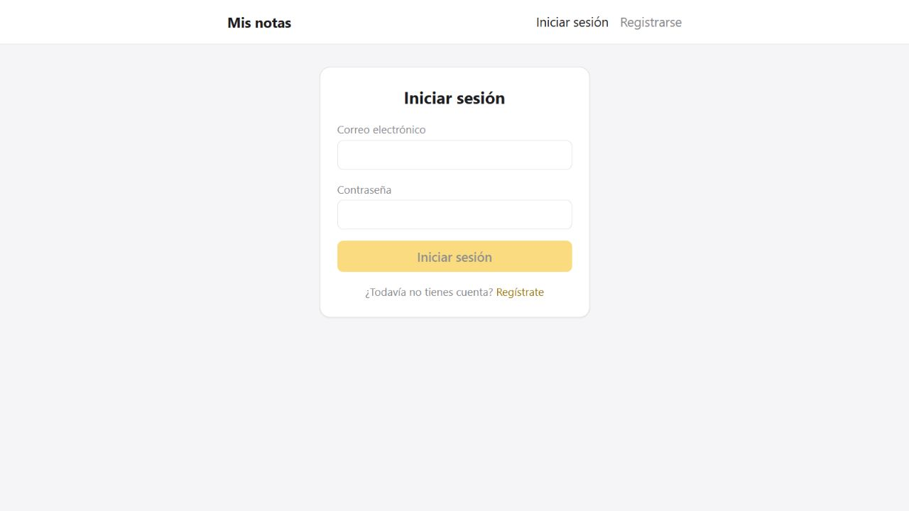

FULL STACK JUNIOR · COLOMBIA
Convierto ideas
en
experiencias web.
Desarrollador web junior Full Stack con experiencia práctica en la creación de aplicaciones web modernas, funcionales y responsivas utilizando HTML, CSS, JavaScript y React. Con conocimientos en desarrollo back-end con Node.js y Express, gestión de bases de datos con MongoDB y Mongoose, integración de APIs REST y autenticación de usuarios. He desarrollado proyectos que abarcan tanto el front-end como el back-end, aplicando buenas prácticas de programación y control de versiones con Git y GitHub. Me apasiona resolver problemas, escribir código limpio y desarrollar soluciones que mejoren la experiencia del usuario. Comprometido con el aprendizaje continuo, el trabajo en equipo y mi crecimiento profesional como desarrollador Full Stack.
ReactTypeScriptNode.jsMongoDB
01 / TRABAJO SELECCIONADO
Ideas que toman forma.
Aplicaciones para organizar, compartir
y hacer más simple lo
cotidiano.
02 / MÁS ALLÁ DEL CÓDIGO
Primero entender.
Después, construir.
Me interesa crear software que resuelva problemas reales y que sea fácil de usar.
Soy ingeniero de software y estoy fortaleciendo mi perfil Full Stack en TripleTen. Mi experiencia en soporte técnico me ha enseñado a escuchar, diagnosticar problemas y acompañar a las personas hasta encontrar una solución.
Hoy llevo esa experiencia al desarrollo web: interfaces con React, APIs con Node.js y Express, y datos con MongoDB. También he trabajado con SQL y automatización mediante scripts y VBA.
EXPERIENCIAWorld Office Colombia
Soporte técnico · Desde 2014
FORMACIÓNIngeniería de Software · UNINPAHU
2017 - 2022
Desarrollo Web Full Stack · TripleTen
2026
03 / CONECTEMOS